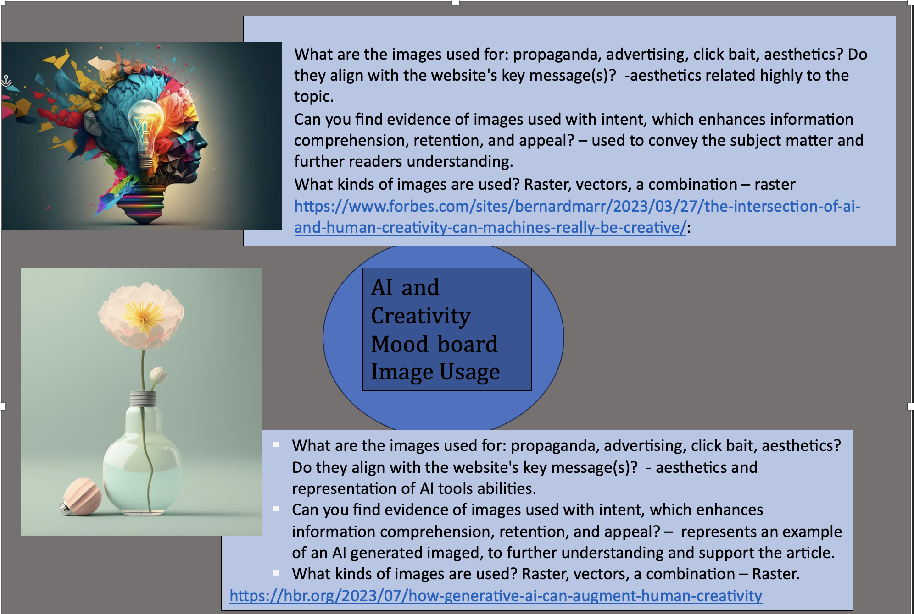
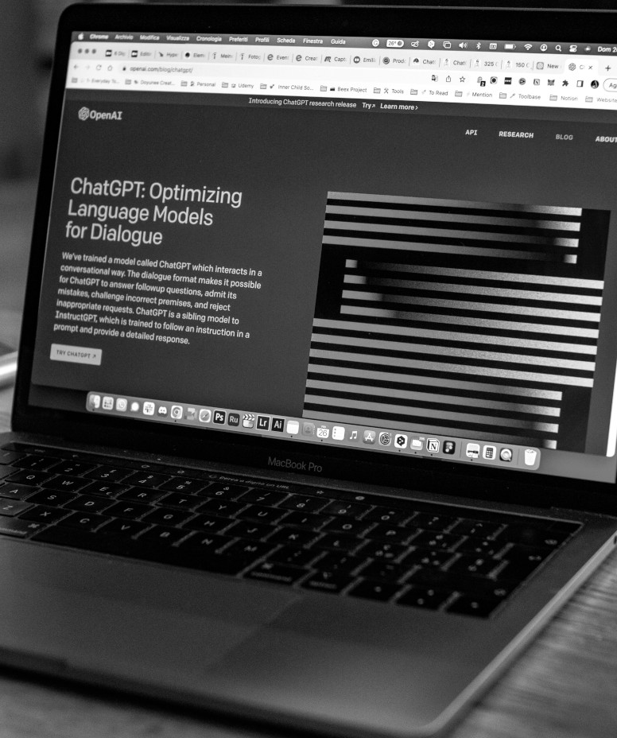

AI tools and their impact on creative media projects - MAD WEEK 7
MAD(A) Week 7 page - Creative Process and Image Usuage
The stages of the creative process:
Reflection of my work and creative process:
Preparation:
Researching across different platforms such as websites videos and journals. Gathering different resources from my research and compiling it together.
Incubation:
Brainstorming different topics to explore related to AI and creativity, filtering my prior related to my prior research such as advantages, disadvantages and opinions of AI and Future Implications.
Ideation:
Creating an informative piece opposed to having an argument, remaining neutral in the topic and supplying arguments and points from different angles.
Evaluation:
- Is it worth pursuing?: yes
- Is it novel enough, or has it been done too many times before? – done before but not over saturated.
- Are there necessary changes I could make?- narrow down my topic are ie relative to a certain AI tool.
- What do my lecturers or colleagues think of the idea? – good overall but needs to be refined.
Implementation:
overall, making good progress but still a lot of work to continue on with mainly refining my work
Moodboard:Image Usuage
Image Editing:
Original Image:
rating the image: 3 - passable. An image of acceptable quality. Interference is not objectionable. However could be cropped and rescaed to further enhance image.

Editied Image: greyscale and editied resolution
rating the image: 2 fine. An image of extremely high quality, as good as you could desire. Changing to greyscale and edititng resolution overall enahanced the image.
Editied Image: indexed and editied resolution
rating the image: 5 inferior. A very poor image, but you could watch it. Objectionable
interference is definitely present.
As the image resultion was set to 100 it isnt optimal for HTML and therefore causes issues and makes the image look worse. furthermore increasing the size isnt optimal for the webpage. Also making the colours looked warped on the page.